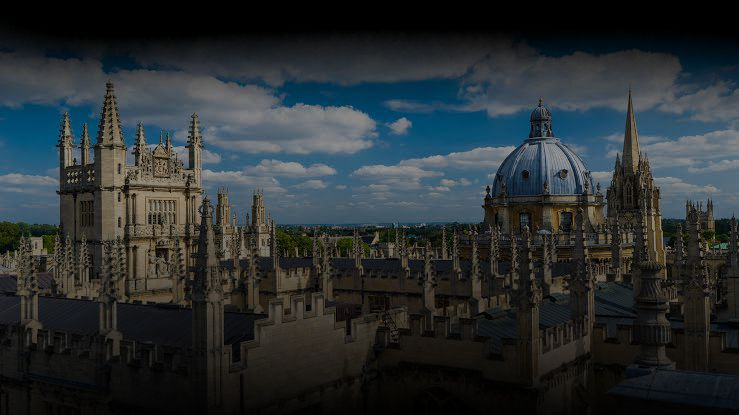
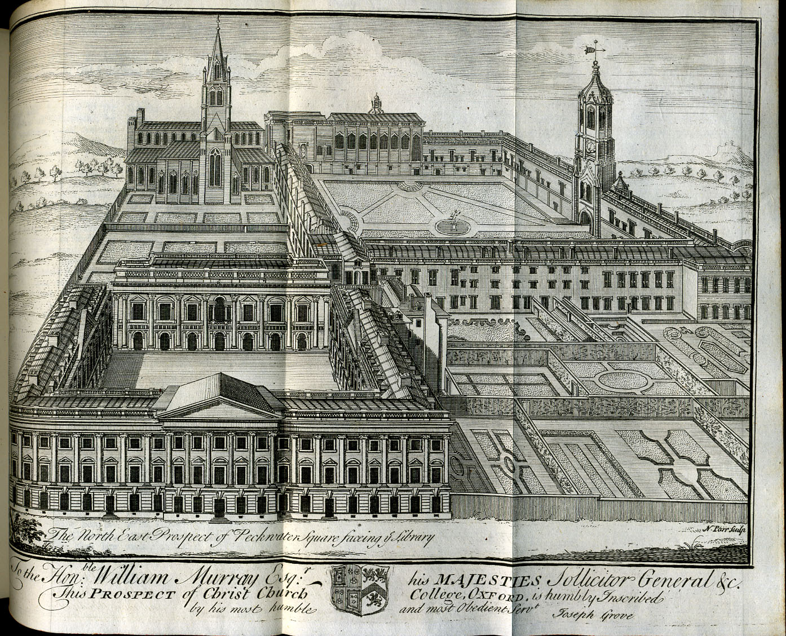

<!DOCTYPE html>
<html>
    <head>
        <title>University of Oxford</title>
        <link rel="stylesheet" type="text/css" href="tampilan oxford.css">
        <meta name="viewport" content="width=device-width, initial-scale=1">
    </head>
</html>

<body bgcolor="black">
    <header>
        <div class="uni"></div>
        <div class="homepage">HOMEPAGE</div>
    </header>


    <nav>
        <div class="menu-bar">
        <ul>
          <li><a href="index.html">Homepage</a></li>
          <li id="menu-products">
            <button onclick="myFunction()" class="dropbtn">About ▼</button>
            <ul id="dropdown-products">
                <div id="myDropdown" class="dropdown-content">
              <li><a href="OrganisationsOxClar.html">Organisation</a></li>
              <li><a href="牛津大学Clar.html">牛津大学</a></li>
              <li><a href="InternationalOxfordClar.html">International Oxford</a></li>
            </div>
            </ul>
          </li>
          <li><a href="G:\OXFORD\ResearchClar.html">Research</a></li>
        </ul>
        </div>
      </nav>


    <script>
        function myFunction() {
            document.getElementById("myDropdown").classList.toggle("show");
        }

        window.onclick = function(event) {
  if (!event.target.matches('.dropbtn')) {
    var dropdowns = document.getElementsByClassName("dropdown-content");
    var i;
    for (i = 0; i < dropdowns.length; i++) {
      var openDropdown = dropdowns[i];
      if (openDropdown.classList.contains('show')) {
        openDropdown.classList.remove('show');
      }
    }
  }
}
    </script>


<div id="">
    <div class="satu"></div>
    <div class="dua">Oxford University</div></div>
    <div class="empat">Oxford is a world-leading centre of learning, teaching and research and the oldest university in the English-speaking world. Founded in the 12th century, it offers a wide range of undergraduate and postgraduate programs across various disciplines.
</div>


        <div class="anin">
            HISTORY OF THE UNIVERSITY
        
        <div class="syafi"><a href="History Clar.html"></a>The University of Oxford, located in Oxford, England, is one of the oldest and most prestigious universities in the world. Its history can be traced back to the 12th century, with teaching beginning around 1096, making it the oldest university in the English-speaking world. The university grew rapidly during the 12th century, attracting scholars from across Europe. By 1200, Oxford was recognized as a center of learning, and the establishment of the first colleges, such as University College (1249), Balliol College (1263), and Merton College (1264), marked significant milestones in its development.

            As the university progressed into the 14th century, it saw the establishment of more colleges, including Exeter (1314) and Oriel (1326), each contributing to the university's collegiate system. However, this period was not without conflict; tensions between scholars and townspeople often led to riots and calls for reform. The 16th century also witnessed the university aligning more closely with the Church of England during the Reformation, further shaping its identity.
            
            The Renaissance and Enlightenment eras, spanning the 17th to 18th centuries, were marked by significant academic advancements. Scholars like John Locke and Christopher Wren became associated with Oxford, contributing to its growing reputation. During the English Civil War, Oxford emerged as a Royalist stronghold, with its facilities utilized to support the king, highlighting its political significance.
            
            The 19th century brought about substantial changes, including reforms that allowed students to attend regardless of their religious affiliations. The establishment of new colleges, such as Lady Margaret Hall (1878), marked the beginning of women’s education at Oxford. The 20th century continued this trajectory of modernization and expansion, especially during and after the World Wars, with Oxford producing numerous leaders and scholars who played key roles in various fields.
            
            In the 21st century, the University of Oxford has maintained its status as a leading global institution, boasting a diverse student body and extensive international collaborations. It remains at the forefront of research and innovation, making significant contributions to advancements in science, technology, and the humanities. Today, with 39 colleges and a wide range of academic departments, Oxford continues to reflect its rich history intertwined with the evolution of education, culture, and society in England and beyond.
            
                  
            <a href="">
                
            </a>
        </div>
    </div>
</div>

<main>
    <article class="news">
        <section>
            <h3>EXPLORE MORE</h3>

        </section>
    </article>

    <div id="card-area">
        <div class="wrapper">
            <div class="box-area">
                <div class="box">
                    
                    <div class="overlay">
                        <h3>NEWS 1</h3>
                        <p>Oxford Researchers Record the Wettest Month in 250 Years</p>
                        <a href="NEWS 1 CLar.html">Click This</a>
                    </div>
                </div>
                <div class="box">
                    
                    <div class="overlay">
                        <h3>NEWS 2</h3>
                        <p>Pioneering digital technology to examine musical themes of England’s most celebrated composer</p>
                        <a href="NEWS 2 Clar.html">Click This</a>
                    </div>
                </div>
                <div class="box">
                    
                    <div class="overlay">
                        <h3>NEWS 3</h3>
                        <p>Oxford Vaccine Group marks 30 years battling ‘deadly six’ diseases with major art installation</p>
                        <a href="NEWS 3 Clar.html">Click This</a>
                    </div>
                </div>
            </div>
        </div>
    </div>

</main>

<footer>
    <div class="rama">CONNECT WITH US</div>
    <div class="mam">
        <a href="https://www.youtube.com/@oxforduniversity"></a></div>
    <div class="mam">
        <a href="https://www.instagram.com/oxford_uni/"></a></div>
    <p>&copy; 2024 - University of Oxford</p>
</footer>

    
</body>